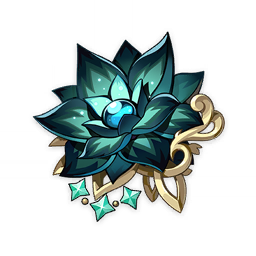
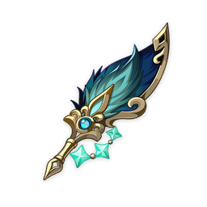
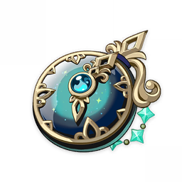
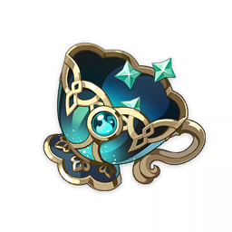
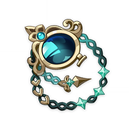

Artifacts
Nymph's Dream
Nymph's Dream
Available in 4★ and 5★
Bonuses:
2-Piece Set Bonus
Hydro DMG Bonus +15%4-Piece Set Bonus
After Normal, Charged, and Plunging Attacks, Elemental Skills, and Elemental Bursts hit opponents, 1 stack of Mirrored Nymph will be triggered, lasting 8s. When under the effect of 1, 2, or 3 or more Mirrored Nymph stacks, ATK will be increased by 7%/16%/25%, and Hydro DMG Bonus will be increased by 4%/9%/15%. Mirrored Nymph stacks created by Normal, Charged, and Plunging Attacks, Elemental Skills, and Elemental Bursts exist independently.Pieces:
Odyssean Flower
The story must end, and even fresh flowers will wither. But the flower within one's dreams will always remain in full and fragrant bloom.

Wicked Mage's Plumule
This was once a decorative feather in someone's hat. Being dark green, it is quite eye-catching indeed.

Nymph's Constancy
A pocket watch that has long stopped working. It seems to have borne witness to many a passing year as its hands spun in vain.

Heroes' Tea Party
A lovely teacup. Perhaps it was once used by people enjoying a leisurely afternoon together.

Fell Dragon's Monocle
An exquisitely-made monocle. Ancient anecdotes say that one might be able to see the future through it.